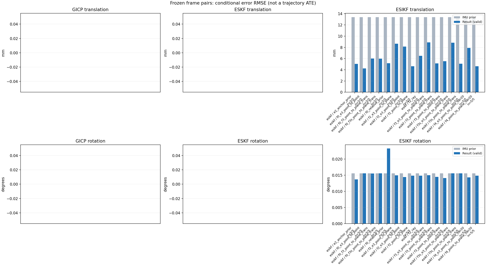

20261015_112757_right · depth=disparity_cache · cache=36de05d559a88601f99a
模型视差：/home/ubuntu22/slam/SIO_SLAM/models/tensorrt/disp_896x448_fp16.plan；engine SHA256=604cf6ac1f705c877260711730dd5d2d58c2a21f3020c03c668401ef7fb1e768。输入为生产裁剪与光照处理后的 RGB 0..255；此实验使用原始浮点像素视差，不应用完整前端的邻域视差后处理。
原始 ONNX SHA256：e9f49736a65d68d06681add463866b6defdf78fdd7f4f50f6cc941b682fdc0bc。
代价体图改写验证：ONNX Runtime 固定随机特征输入，最大绝对误差 0；该项检查图改写，完整模型精度仍需由录制数据评估。
配准代码版本：744ac2d993ae629b0cc44a3b1d995e04ab4fad48；观测生成版本：744ac2d993ae629b0cc44a3b1d995e04ab4fad48。
固定图像对与纯 IMU 先验；ESKF 回放固定 GICP 观测，ESIKF 直接读取点云。真值只用于此报告。
同时查看 converged 与 solver_status：上游默认 Stereo 在 max_iter / stopped_at_minimum 时也可能置 converged=true。valid 表示输入检查通过，不表示精度提升。欧氏 GICP 未提供独立的点距 RMSE，该列显示 NaN。
误差按每对图像的锚点计算，单位 m / degrees。此处 RMSE 不是全序列 ATE；末帧受同一锚点条件约束。NIS 与条件马氏距离是诊断量，少量相关图像对不能用于宣称协方差已校准。
全部指标 CSV · R / P 矩阵 CSV · Stereo 求解逐轮 CSV · ESIKF 逐轮轨迹 CSV · 末轮 H / R / K_pose 矩阵 CSV · 配置快照 · 矢量图
unflagged 排除纯惯性先验平移误差超过 50 mm 的图像对；whitened 为误差按协方差白化后的每自由度均值，协方差与实际误差相符时约为 1。prior_whitened 用真值误差只检验先验 P；NIS 为 ESIKF 首轮 rᵀ(P+R)⁻¹r，不用真值，检验的是 P+R 的总量，单靠它分不开 P 与 R，偏差、错误对应和线性化误差也会抬高它。观测方差超过先验方差 1e+04 倍的方向视为不可观，从 NIS 及其自由度中去掉（nis_dof）。一致时 nis_per_dof 均值约 1、nis_over_chi2_median 中位数约 1；帧对少且共享序列，超出 95% 分位的比例只作参考。
| stage | method | variant | valid | total | result_translation_rmse_m | result_rotation_rmse_deg | result_translation_median_m | result_rotation_median_deg | result_translation_rmse_unflagged_m | result_rotation_rmse_unflagged_deg | improved_translation | improved_rotation | posterior_whitened_by_P_rot_mean | posterior_whitened_by_P_trans_mean | prior_whitened_by_P_rot_mean | prior_whitened_by_P_trans_mean | nis_per_dof_mean | nis_over_chi2_median_median | nis_exceeds_chi2_95_fraction |
|---|---|---|---|---|---|---|---|---|---|---|---|---|---|---|---|---|---|---|---|
| esikf | esikf | e2_anchor_prior | 5 | 5 | 0.005053 | 0.0137 | 0.0017593 | 0.0090167 | 0.005053 | 0.0137 | 3 | 3 | 37.255 | 114.8 | 35.084 | 3.4942 | 6.1869 | 3.5713 | 0.8 |
| esikf | esikf | f0_e3_point_to_point | 5 | 5 | 0.0042238 | 0.015567 | 0.0024719 | 0.0098071 | 0.0042238 | 0.015567 | 3 | 3 | 29.805 | 0.97725 | 29.46 | 0.016324 | 0.053747 | 0.029558 | 0 |
| esikf | esikf | f0_f3_point_to_plane_trans | 5 | 5 | 0.0060165 | 0.015554 | 0.0037215 | 0.0097873 | 0.0060165 | 0.015554 | 3 | 3 | 29.79 | 20.735 | 29.46 | 0.016324 | 0.28932 | 0.060368 | 0 |
| esikf | esikf | f0_f3s_point_to_plane_trans | 5 | 5 | 0.005983 | 0.015574 | 0.0037215 | 0.0098191 | 0.005983 | 0.015574 | 3 | 0 | 29.46 | 20.496 | 29.46 | 0.016324 | 0.28932 | 0.060368 | 0 |
| esikf | esikf | f0_relative_prior | 5 | 5 | 0.0051639 | 0.023278 | 0.0043981 | 0.0099663 | 0.0051639 | 0.023278 | 3 | 2 | 34.295 | 109.11 | 29.46 | 0.016324 | 5.0237 | 2.2424 | 0.4 |
| esikf | esikf | f2_e3_point_to_plane | 5 | 5 | 0.0086462 | 0.014948 | 0.003996 | 0.0098115 | 0.0086462 | 0.014948 | 4 | 4 | 35.91 | 3.1291 | 35.084 | 3.4942 | 0.44197 | 0.14712 | 0 |
| esikf | esikf | f2_e3_point_to_point | 5 | 5 | 0.0081382 | 0.01444 | 0.0039427 | 0.009802 | 0.0081382 | 0.01444 | 5 | 2 | 35.982 | 5.2265 | 35.084 | 3.4942 | 0.15581 | 0.1299 | 0 |
| esikf | esikf | f2_point_to_plane | 5 | 5 | 0.0046381 | 0.014838 | 0.0026762 | 0.0095783 | 0.0046381 | 0.014838 | 4 | 4 | 39.174 | 9.8853 | 35.084 | 3.4942 | 5.725 | 6.7979 | 0.6 |
| esikf | esikf | f2_ray | 5 | 5 | 0.0064854 | 0.014828 | 0.0032893 | 0.0092615 | 0.0064854 | 0.014828 | 2 | 2 | 40.023 | 12.899 | 35.084 | 3.4942 | 12.531 | 18.679 | 1 |
| esikf | esikf | f3_e3_point_to_plane_trans | 5 | 5 | 0.0088864 | 0.014993 | 0.0040032 | 0.0098136 | 0.0088864 | 0.014993 | 5 | 2 | 35.957 | 3.1317 | 35.084 | 3.4942 | 1.1093 | 0.90474 | 0 |
| esikf | esikf | f3_point_to_plane_trans | 5 | 5 | 0.0051258 | 0.014489 | 0.0038596 | 0.0095873 | 0.0051258 | 0.014489 | 3 | 2 | 39.361 | 14.027 | 35.084 | 3.4942 | 7.6076 | 4.9078 | 0.8 |
| esikf | esikf | f3_point_to_point_trans | 5 | 5 | 0.0055195 | 0.014109 | 0.0039031 | 0.0092616 | 0.0055195 | 0.014109 | 2 | 2 | 42.09 | 148.72 | 35.084 | 3.4942 | 2.0392 | 1.412 | 0.2 |
| esikf | esikf | f3s_e3_point_to_plane_trans | 5 | 5 | 0.0088256 | 0.015574 | 0.0040032 | 0.0098191 | 0.0088256 | 0.015574 | 5 | 0 | 35.084 | 3.1052 | 35.084 | 3.4942 | 1.1093 | 0.90474 | 0 |
| esikf | esikf | f3s_point_to_plane_trans | 5 | 5 | 0.00509 | 0.015574 | 0.0038596 | 0.0098191 | 0.00509 | 0.015574 | 3 | 0 | 35.084 | 13.907 | 35.084 | 3.4942 | 7.6076 | 4.9078 | 0.8 |
| esikf | esikf | f4_e3_point_to_point_iter20 | 5 | 5 | 0.0079029 | 0.014319 | 0.0039427 | 0.009802 | 0.0079029 | 0.014319 | 5 | 2 | 35.867 | 5.0513 | 35.084 | 3.4942 | 0.15581 | 0.1299 | 0 |
| esikf | esikf | f4_point_to_plane_iter20 | 5 | 5 | 0.0046393 | 0.014842 | 0.0026762 | 0.0095783 | 0.0046393 | 0.014842 | 4 | 4 | 39.18 | 9.8997 | 35.084 | 3.4942 | 5.725 | 6.7979 | 0.6 |

| stage | case | method | variant | status | solver_status | inliers | converged | covariance_convention | covariance_from_hessian | fitness | registration_rmse_m | prior_trans_error_m | result_trans_error_m | prior_rot_error_deg | result_rot_error_deg | prior_flagged | R_rot_trace_rad2 | R_pos_trace_m2 | nis_regularized | posterior_whitened_by_P_rot | posterior_whitened_by_P_trans | prior_whitened_by_P_rot | prior_whitened_by_P_trans | nis_per_dof | nis_dof |
|---|---|---|---|---|---|---|---|---|---|---|---|---|---|---|---|---|---|---|---|---|---|---|---|---|---|
| esikf | static_start | esikf | e2_anchor_prior | updated | converged | 15559 | 1 | 1 | 0 | 0 | 8.5313e-05 | 0.00037582 | 0.00090396 | 0.00096629 | 0 | 1.3694e-07 | 9.5327e-07 | nan | 0.34391 | 0.94543 | 0.29287 | 0.027479 | 2.3613 | 6 | |
| esikf | static_start | esikf | f0_relative_prior | updated | converged | 15560 | 1 | 1 | 0 | 0 | 8.5313e-05 | 0.0010018 | 0.00090396 | 0.00092738 | 0 | 1.3667e-07 | 9.4896e-07 | nan | 0.26923 | 2.2879 | 0.26374 | 0.001286 | 1.792 | 6 | |
| esikf | static_start | esikf | f2_point_to_plane | updated | converged | 15559 | 1 | 1 | 0 | 0 | 8.5313e-05 | 0.0002879 | 0.00090396 | 0.00090366 | 0 | 8.5111e-07 | 3.6556e-06 | nan | 0.29373 | 0.36733 | 0.29287 | 0.027479 | 1.9494 | 6 | |
| esikf | static_start | esikf | f2_ray | updated | converged | 15558 | 1 | 1 | 0 | 0 | 8.5313e-05 | 0.0005192 | 0.00090396 | 0.00091566 | 0 | 0.013072 | 1.487e-05 | nan | 0.29866 | 1.2276 | 0.29287 | 0.027479 | 4.0284 | 3 | |
| esikf | static_start | esikf | f3_point_to_point_trans | updated | converged | 15559 | 1 | 1 | 0 | 0 | 8.5313e-05 | 0.00038319 | 0.00090396 | 0.00090904 | 0 | 0.13697 | 9.5385e-07 | nan | 0.29551 | 0.96636 | 0.29287 | 0.027479 | 1.0991 | 3 | |
| esikf | static_start | esikf | f3_point_to_plane_trans | updated | converged | 15559 | 1 | 1 | 0 | 0 | 8.5313e-05 | 0.00036354 | 0.00090396 | 0.0009089 | 0 | 0.85143 | 3.6596e-06 | nan | 0.29534 | 0.58797 | 0.29287 | 0.027479 | 3.8706 | 3 | |
| esikf | static_start | esikf | f0_f3_point_to_plane_trans | updated | converged | 15519 | 1 | 1 | 0 | 0 | 8.5313e-05 | 0.0029777 | 0.00090396 | 0.00091137 | 0 | 0.85588 | 3.7326e-06 | nan | 0.26764 | 7.2891 | 0.26374 | 0.001286 | 0.99307 | 3 | |
| esikf | static_start | esikf | f3s_point_to_plane_trans | updated | converged | 15559 | 1 | 1 | 0 | 0 | 8.5313e-05 | 0.00036355 | 0.00090396 | 0.00090396 | 0 | 0.85143 | 3.6596e-06 | nan | 0.29287 | 0.58797 | 0.29287 | 0.027479 | 3.8706 | 3 | |
| esikf | static_start | esikf | f0_f3s_point_to_plane_trans | updated | converged | 15519 | 1 | 1 | 0 | 0 | 8.5313e-05 | 0.0029776 | 0.00090396 | 0.00090396 | 0 | 0.85588 | 3.7326e-06 | nan | 0.26374 | 7.2889 | 0.26374 | 0.001286 | 0.99307 | 3 | |
| esikf | static_start | esikf | f4_point_to_plane_iter20 | updated | converged | 15559 | 1 | 1 | 0 | 0 | 8.5313e-05 | 0.0002879 | 0.00090396 | 0.00090366 | 0 | 8.5111e-07 | 3.6556e-06 | nan | 0.29373 | 0.36733 | 0.29287 | 0.027479 | 1.9494 | 6 | |
| esikf | static_start | esikf | f2_e3_point_to_point | updated | converged | 15559 | 1 | 1 | 0 | 0 | 8.5313e-05 | 8.2176e-05 | 0.00090396 | 0.00090427 | 0 | 1.5228e-05 | 7.9288e-05 | nan | 0.29337 | 0.025714 | 0.29287 | 0.027479 | 0.028442 | 4 | |
| esikf | static_start | esikf | f0_e3_point_to_point | updated | converged | 15559 | 1 | 1 | 0 | 0 | 8.5313e-05 | 0.00016203 | 0.00090396 | 0.00090462 | 0 | 1.5228e-05 | 7.928e-05 | nan | 0.2642 | 0.0043513 | 0.26374 | 0.001286 | 0.024805 | 4 | |
| esikf | static_start | esikf | f2_e3_point_to_plane | updated | converged | 15559 | 1 | 1 | 0 | 0 | 8.5313e-05 | 8.5389e-05 | 0.00090396 | 0.00090373 | 0 | 4.9757e-05 | 0.00013107 | nan | 0.29287 | 0.027654 | 0.29287 | 0.027479 | 0.068268 | 3 | |
| esikf | static_start | esikf | f3_e3_point_to_plane_trans | updated | converged | 15559 | 1 | 1 | 0 | 0 | 8.5313e-05 | 8.2931e-05 | 0.00090396 | 0.00090411 | 0 | 0.85157 | 0.00013107 | nan | 0.29294 | 0.026084 | 0.29287 | 0.027479 | 0.12642 | 3 | |
| esikf | static_start | esikf | f3s_e3_point_to_plane_trans | updated | converged | 15559 | 1 | 1 | 0 | 0 | 8.5313e-05 | 8.2931e-05 | 0.00090396 | 0.00090396 | 0 | 0.85157 | 0.00013107 | nan | 0.29287 | 0.026084 | 0.29287 | 0.027479 | 0.12642 | 3 | |
| esikf | static_start | esikf | f4_e3_point_to_point_iter20 | updated | converged | 15559 | 1 | 1 | 0 | 0 | 8.5313e-05 | 8.2176e-05 | 0.00090396 | 0.00090427 | 0 | 1.5228e-05 | 7.9288e-05 | nan | 0.29337 | 0.025714 | 0.29287 | 0.027479 | 0.028442 | 4 | |
| esikf | sync_motion | esikf | e2_anchor_prior | updated | converged | 16415 | 1 | 1 | 0 | 0 | 0.00089766 | 0.0012663 | 0.0098191 | 0.0090167 | 0 | 1.2979e-07 | 9.1147e-07 | nan | 31.632 | 9.3931 | 34.932 | 1.8185 | 3.1832 | 6 | |
| esikf | sync_motion | esikf | f0_relative_prior | updated_not_converged | max_iterations | 16430 | 0 | 1 | 0 | 0 | 0.00089766 | 0.0043981 | 0.0098191 | 0.0099663 | 0 | 1.2936e-07 | 9.0506e-07 | nan | 30.281 | 52.018 | 28.974 | 0.0059311 | 1.9987 | 6 | |
| esikf | sync_motion | esikf | f2_point_to_plane | updated | converged | 16425 | 1 | 1 | 0 | 0 | 0.00089766 | 0.00082715 | 0.0098191 | 0.0095783 | 0 | 8.8913e-07 | 3.644e-06 | nan | 33.687 | 1.8676 | 34.932 | 1.8185 | 12.59 | 6 | |
| esikf | sync_motion | esikf | f2_ray | updated | converged | 16424 | 1 | 1 | 0 | 0 | 0.00089766 | 0.0013124 | 0.0098191 | 0.0092615 | 0 | 0.0093564 | 1.2668e-05 | nan | 32.351 | 4.7479 | 34.932 | 1.8185 | 16.037 | 3 | |
| esikf | sync_motion | esikf | f3_point_to_point_trans | updated | converged | 16387 | 1 | 1 | 0 | 0 | 0.00089766 | 0.0031502 | 0.0098191 | 0.0092616 | 0 | 0.13025 | 9.1114e-07 | nan | 32.382 | 76.014 | 34.932 | 1.8185 | 5.5034 | 3 | |
| esikf | sync_motion | esikf | f3_point_to_plane_trans | updated | converged | 16395 | 1 | 1 | 0 | 0 | 0.00089766 | 0.00094689 | 0.0098191 | 0.0095873 | 0 | 0.89563 | 3.6699e-06 | nan | 33.924 | 2.761 | 34.932 | 1.8185 | 19.918 | 3 | |
| esikf | sync_motion | esikf | f0_f3_point_to_plane_trans | updated_not_converged | max_iterations | 16445 | 0 | 1 | 0 | 0 | 0.00089766 | 0.0079151 | 0.0098191 | 0.0097873 | 0 | 0.87979 | 3.4392e-06 | nan | 28.848 | 48.003 | 28.974 | 0.0059311 | 0.38495 | 3 | |
| esikf | sync_motion | esikf | f3s_point_to_plane_trans | updated | converged | 16395 | 1 | 1 | 0 | 0 | 0.00089766 | 0.00094869 | 0.0098191 | 0.0098191 | 0 | 0.89601 | 3.6702e-06 | nan | 34.932 | 2.7727 | 34.932 | 1.8185 | 19.918 | 3 | |
| esikf | sync_motion | esikf | f0_f3s_point_to_plane_trans | updated_not_converged | max_iterations | 16446 | 0 | 1 | 0 | 0 | 0.00089766 | 0.0077856 | 0.0098191 | 0.0098191 | 0 | 0.87834 | 3.4279e-06 | nan | 28.974 | 46.76 | 28.974 | 0.0059311 | 0.38495 | 3 | |
| esikf | sync_motion | esikf | f4_point_to_plane_iter20 | updated | converged | 16425 | 1 | 1 | 0 | 0 | 0.00089766 | 0.00082715 | 0.0098191 | 0.0095783 | 0 | 8.8913e-07 | 3.644e-06 | nan | 33.687 | 1.8676 | 34.932 | 1.8185 | 12.59 | 6 | |
| esikf | sync_motion | esikf | f2_e3_point_to_point | updated | converged | 16435 | 1 | 1 | 0 | 0 | 0.00089766 | 0.00087975 | 0.0098191 | 0.009802 | 0 | 1.4398e-05 | 7.5535e-05 | nan | 34.864 | 1.7742 | 34.932 | 1.8185 | 0.086888 | 4 | |
| esikf | sync_motion | esikf | f0_e3_point_to_point | updated | converged | 16403 | 1 | 1 | 0 | 0 | 0.00089766 | 0.0024719 | 0.0098191 | 0.0098071 | 0 | 1.4455e-05 | 7.6172e-05 | nan | 28.944 | 0.32916 | 28.974 | 0.0059311 | 0.021818 | 4 | |
| esikf | sync_motion | esikf | f2_e3_point_to_plane | updated | converged | 16435 | 1 | 1 | 0 | 0 | 0.00089766 | 0.00088673 | 0.0098191 | 0.0098115 | 0 | 5.2025e-05 | 0.00013134 | nan | 34.898 | 1.7829 | 34.932 | 1.8185 | 0.11603 | 3 | |
| esikf | sync_motion | esikf | f3_e3_point_to_plane_trans | updated | converged | 16435 | 1 | 1 | 0 | 0 | 0.00089766 | 0.0008667 | 0.0098191 | 0.0098136 | 0 | 0.89038 | 0.00013134 | nan | 34.911 | 1.698 | 34.932 | 1.8185 | 0.71354 | 3 | |
| esikf | sync_motion | esikf | f3s_e3_point_to_plane_trans | updated | converged | 16435 | 1 | 1 | 0 | 0 | 0.00089766 | 0.0008667 | 0.0098191 | 0.0098191 | 0 | 0.89038 | 0.00013134 | nan | 34.932 | 1.698 | 34.932 | 1.8185 | 0.71354 | 3 | |
| esikf | sync_motion | esikf | f4_e3_point_to_point_iter20 | updated | converged | 16435 | 1 | 1 | 0 | 0 | 0.00089766 | 0.00087975 | 0.0098191 | 0.009802 | 0 | 1.4398e-05 | 7.5535e-05 | nan | 34.864 | 1.7742 | 34.932 | 1.8185 | 0.086888 | 4 | |
| esikf | main_motion | esikf | e2_anchor_prior | updated_not_converged | max_iterations | 20141 | 0 | 1 | 0 | 0 | 0.0040306 | 0.0017593 | 0.019163 | 0.017788 | 0 | 9.3849e-08 | 9.7675e-07 | nan | 124.38 | 4.2428 | 115.09 | 4.9624 | 1.2523 | 6 | |
| esikf | main_motion | esikf | f0_relative_prior | updated_not_converged | max_iterations | 20130 | 0 | 1 | 0 | 0 | 0.0040306 | 0.0019103 | 0.019163 | 0.01815 | 0 | 9.3817e-08 | 9.7745e-07 | nan | 95.497 | 6.606 | 99.579 | 0.016259 | 0.61645 | 6 | |
| esikf | main_motion | esikf | f2_point_to_plane | updated | converged | 20213 | 1 | 1 | 0 | 0 | 0.0040306 | 0.0032542 | 0.019163 | 0.018955 | 0 | 7.54e-07 | 4.0151e-06 | nan | 130.26 | 7.9367 | 115.09 | 4.9624 | 0.68038 | 6 | |
| esikf | main_motion | esikf | f2_ray | updated | converged | 20256 | 1 | 1 | 0 | 0 | 0.0040306 | 0.0048536 | 0.019163 | 0.019626 | 0 | 0.007318 | 1.9154e-05 | nan | 135.93 | 14.044 | 115.09 | 4.9624 | 6.6253 | 3 | |
| esikf | main_motion | esikf | f3_point_to_point_trans | updated_not_converged | max_iterations | 20274 | 0 | 1 | 0 | 0 | 0.0040306 | 0.007411 | 0.019163 | 0.020066 | 0 | 0.092503 | 9.4405e-07 | nan | 150.19 | 190.55 | 115.09 | 4.9624 | 1.5418 | 3 | |
| esikf | main_motion | esikf | f3_point_to_plane_trans | updated | converged | 20203 | 1 | 1 | 0 | 0 | 0.0040306 | 0.0038596 | 0.019163 | 0.019249 | 0 | 0.75472 | 4.0396e-06 | nan | 133.47 | 10.193 | 115.09 | 4.9624 | 2.2505 | 3 | |
| esikf | main_motion | esikf | f0_f3_point_to_plane_trans | updated | converged | 20196 | 1 | 1 | 0 | 0 | 0.0040306 | 0.0037215 | 0.019163 | 0.019163 | 0 | 0.75744 | 4.091e-06 | nan | 100.83 | 7.0744 | 99.579 | 0.016259 | 0.010874 | 3 | |
| esikf | main_motion | esikf | f3s_point_to_plane_trans | updated | converged | 20203 | 1 | 1 | 0 | 0 | 0.0040306 | 0.0038596 | 0.019163 | 0.019163 | 0 | 0.75472 | 4.0396e-06 | nan | 115.09 | 10.193 | 115.09 | 4.9624 | 2.2505 | 3 | |
| esikf | main_motion | esikf | f0_f3s_point_to_plane_trans | updated | converged | 20196 | 1 | 1 | 0 | 0 | 0.0040306 | 0.0037215 | 0.019163 | 0.019163 | 0 | 0.75744 | 4.091e-06 | nan | 99.579 | 7.0744 | 99.579 | 0.016259 | 0.010874 | 3 | |
| esikf | main_motion | esikf | f4_point_to_plane_iter20 | updated | converged | 20213 | 1 | 1 | 0 | 0 | 0.0040306 | 0.0032542 | 0.019163 | 0.018955 | 0 | 7.54e-07 | 4.0151e-06 | nan | 130.26 | 7.9367 | 115.09 | 4.9624 | 0.68038 | 6 | |
| esikf | main_motion | esikf | f2_e3_point_to_point | updated | converged | 20249 | 1 | 1 | 0 | 0 | 0.0040306 | 0.0039427 | 0.019163 | 0.019169 | 0 | 1.0179e-05 | 7.6763e-05 | nan | 117.52 | 5.1874 | 115.09 | 4.9624 | 0.10901 | 4 | |
| esikf | main_motion | esikf | f0_e3_point_to_point | updated_not_converged | max_iterations | 20156 | 0 | 1 | 0 | 0 | 0.0040306 | 0.0019561 | 0.019163 | 0.019147 | 0 | 1.041e-05 | 8.0787e-05 | nan | 100.66 | 0.062038 | 99.579 | 0.016259 | 0.0063958 | 5 | |
| esikf | main_motion | esikf | f2_e3_point_to_plane | updated | converged | 20263 | 1 | 1 | 0 | 0 | 0.0040306 | 0.003996 | 0.019163 | 0.019161 | 0 | 4.3569e-05 | 0.00013963 | nan | 116.58 | 5.0483 | 115.09 | 4.9624 | 0.042629 | 3 | |
| esikf | main_motion | esikf | f3_e3_point_to_plane_trans | updated | converged | 20263 | 1 | 1 | 0 | 0 | 0.0040306 | 0.0040032 | 0.019163 | 0.019167 | 0 | 0.74566 | 0.00013963 | nan | 116.62 | 5.0136 | 115.09 | 4.9624 | 0.12707 | 3 | |
| esikf | main_motion | esikf | f3s_e3_point_to_plane_trans | updated | converged | 20263 | 1 | 1 | 0 | 0 | 0.0040306 | 0.0040032 | 0.019163 | 0.019163 | 0 | 0.74566 | 0.00013963 | nan | 115.09 | 5.0136 | 115.09 | 4.9624 | 0.12707 | 3 | |
| esikf | main_motion | esikf | f4_e3_point_to_point_iter20 | updated | converged | 20249 | 1 | 1 | 0 | 0 | 0.0040306 | 0.0039427 | 0.019163 | 0.019169 | 0 | 1.0179e-05 | 7.6763e-05 | nan | 117.52 | 5.1874 | 115.09 | 4.9624 | 0.10901 | 4 | |
| esikf | main_motion_long | esikf | e2_anchor_prior | updated_not_converged | max_iterations | 17171 | 0 | 1 | 0 | 0 | 0.02491 | 0.00579 | 0.02698 | 0.022719 | 0 | 1.2161e-07 | 9.7977e-07 | nan | 20.528 | 115.35 | 18.092 | 4.8972 | 15.535 | 6 | |
| esikf | main_motion_long | esikf | f0_relative_prior | updated_not_converged | max_iterations | 17137 | 0 | 1 | 0 | 0 | 0.02491 | 0.0045616 | 0.02698 | 0.047554 | 0 | 1.2215e-07 | 9.8855e-07 | nan | 40.6 | 55.334 | 13.816 | 0.016729 | 12.5 | 6 | |
| esikf | main_motion_long | esikf | f2_point_to_plane | updated_not_converged | max_iterations | 17133 | 0 | 1 | 0 | 0 | 0.02491 | 0.0094362 | 0.02698 | 0.02505 | 0 | 8.9972e-07 | 4.1095e-06 | nan | 23.409 | 34.551 | 18.092 | 4.8972 | 7.3464 | 6 | |
| esikf | main_motion_long | esikf | f2_ray | updated_not_converged | max_iterations | 17152 | 0 | 1 | 0 | 0 | 0.02491 | 0.013188 | 0.02698 | 0.024552 | 0 | 0.0045758 | 6.208e-05 | nan | 22.099 | 41.873 | 18.092 | 4.8972 | 14.731 | 3 | |
| esikf | main_motion_long | esikf | f3_point_to_point_trans | updated_not_converged | max_iterations | 17061 | 0 | 1 | 0 | 0 | 0.02491 | 0.0039031 | 0.02698 | 0.021939 | 0 | 0.1237 | 1.0389e-06 | nan | 18.121 | 64.371 | 18.092 | 4.8972 | 0.93834 | 3 | |
| esikf | main_motion_long | esikf | f3_point_to_plane_trans | updated_not_converged | max_iterations | 17216 | 0 | 1 | 0 | 0 | 0.02491 | 0.0093868 | 0.02698 | 0.023772 | 0 | 0.89736 | 3.9367e-06 | nan | 20.946 | 35.223 | 18.092 | 4.8972 | 3.4706 | 3 | |
| esikf | main_motion_long | esikf | f0_f3_point_to_plane_trans | updated_not_converged | max_iterations | 17200 | 0 | 1 | 0 | 0 | 0.02491 | 0.00921 | 0.02698 | 0.026932 | 0 | 0.88693 | 3.9447e-06 | nan | 13.952 | 33.055 | 13.816 | 0.016729 | 0.01008 | 3 | |
| esikf | main_motion_long | esikf | f3s_point_to_plane_trans | updated_not_converged | max_iterations | 17201 | 0 | 1 | 0 | 0 | 0.02491 | 0.0092585 | 0.02698 | 0.02698 | 0 | 0.88823 | 3.9387e-06 | nan | 18.092 | 34.139 | 18.092 | 4.8972 | 3.4706 | 3 | |
| esikf | main_motion_long | esikf | f0_f3s_point_to_plane_trans | updated_not_converged | max_iterations | 17201 | 0 | 1 | 0 | 0 | 0.02491 | 0.0091936 | 0.02698 | 0.02698 | 0 | 0.88633 | 3.9416e-06 | nan | 13.816 | 32.896 | 13.816 | 0.016729 | 0.01008 | 3 | |
| esikf | main_motion_long | esikf | f4_point_to_plane_iter20 | updated | converged | 17125 | 1 | 1 | 0 | 0 | 0.02491 | 0.009439 | 0.02698 | 0.025063 | 0 | 9.0013e-07 | 4.1021e-06 | nan | 23.439 | 34.623 | 18.092 | 4.8972 | 7.3464 | 6 | |
| esikf | main_motion_long | esikf | f2_e3_point_to_point | updated_not_converged | max_iterations | 17243 | 0 | 1 | 0 | 0 | 0.02491 | 0.012406 | 0.02698 | 0.023607 | 0 | 1.3404e-05 | 8.0332e-05 | nan | 19.625 | 8.3885 | 18.092 | 4.8972 | 0.27651 | 6 | |
| esikf | main_motion_long | esikf | f0_e3_point_to_point | updated_not_converged | max_iterations | 17066 | 0 | 1 | 0 | 0 | 0.02491 | 0.0049664 | 0.02698 | 0.026967 | 0 | 1.369e-05 | 8.5414e-05 | nan | 14.052 | 1.1798 | 13.816 | 0.016729 | 0.18385 | 6 | |
| esikf | main_motion_long | esikf | f2_e3_point_to_plane | updated | converged | 17241 | 1 | 1 | 0 | 0 | 0.02491 | 0.014896 | 0.02698 | 0.025127 | 0 | 5.1793e-05 | 0.00014012 | nan | 19.969 | 4.3241 | 18.092 | 4.8972 | 0.65271 | 6 | |
| esikf | main_motion_long | esikf | f3_e3_point_to_plane_trans | updated_not_converged | max_iterations | 17257 | 0 | 1 | 0 | 0 | 0.02491 | 0.015803 | 0.02698 | 0.025259 | 0 | 0.8744 | 0.00013928 | nan | 20.209 | 4.8649 | 18.092 | 4.8972 | 1.9978 | 3 | |
| esikf | main_motion_long | esikf | f3s_e3_point_to_plane_trans | updated_not_converged | max_iterations | 17259 | 0 | 1 | 0 | 0 | 0.02491 | 0.015635 | 0.02698 | 0.02698 | 0 | 0.88107 | 0.00013931 | nan | 18.092 | 4.7354 | 18.092 | 4.8972 | 1.9978 | 3 | |
| esikf | main_motion_long | esikf | f4_e3_point_to_point_iter20 | updated | converged | 17244 | 1 | 1 | 0 | 0 | 0.02491 | 0.011621 | 0.02698 | 0.023236 | 0 | 1.3389e-05 | 8.0559e-05 | nan | 19.049 | 7.5124 | 18.092 | 4.8972 | 0.27651 | 6 | |
| esikf | static_end | esikf | e2_anchor_prior | updated | converged | 19978 | 1 | 1 | 0 | 0 | 0.0161 | 0.0094498 | 0.0045092 | 0.0048563 | 0 | 6.9753e-08 | 9.0029e-07 | nan | 9.3891 | 444.07 | 7.0143 | 5.7656 | 8.602 | 6 | |
| esikf | static_end | esikf | f0_relative_prior | updated | converged | 19971 | 1 | 1 | 0 | 0 | 0.0161 | 0.0094088 | 0.0045092 | 0.0042772 | 0 | 6.9796e-08 | 9.0088e-07 | nan | 4.8298 | 429.3 | 4.6658 | 0.041413 | 8.2119 | 6 | |
| esikf | static_end | esikf | f2_point_to_plane | updated | converged | 19833 | 1 | 1 | 0 | 0 | 0.0161 | 0.0026762 | 0.0045092 | 0.0046306 | 0 | 7.5506e-07 | 4.7626e-06 | nan | 8.2201 | 4.7037 | 7.0143 | 5.7656 | 6.0593 | 6 | |
| esikf | static_end | esikf | f2_ray | updated_not_converged | max_iterations | 19812 | 0 | 1 | 0 | 0 | 0.0161 | 0.0032893 | 0.0045092 | 0.004975 | 0 | 0.020451 | 2.2127e-05 | nan | 9.4398 | 2.6017 | 7.0143 | 5.7656 | 21.232 | 3 | |
| esikf | static_end | esikf | f3_point_to_point_trans | updated_not_converged | max_iterations | 19843 | 0 | 1 | 0 | 0 | 0.0161 | 0.0084911 | 0.0045092 | 0.0049704 | 0 | 0.070988 | 9.3503e-07 | nan | 9.4651 | 411.71 | 7.0143 | 5.7656 | 1.1136 | 3 | |
| esikf | static_end | esikf | f3_point_to_plane_trans | updated_not_converged | max_iterations | 19811 | 0 | 1 | 0 | 0 | 0.0161 | 0.0052281 | 0.0045092 | 0.0046197 | 0 | 0.75636 | 4.8099e-06 | nan | 8.1666 | 21.372 | 7.0143 | 5.7656 | 8.5283 | 3 | |
| esikf | static_end | esikf | f0_f3_point_to_plane_trans | updated_not_converged | max_iterations | 19846 | 0 | 1 | 0 | 0 | 0.0161 | 0.0032865 | 0.0045092 | 0.0045339 | 0 | 0.74978 | 4.7308e-06 | nan | 5.0497 | 8.2544 | 4.6658 | 0.041413 | 0.04761 | 3 | |
| esikf | static_end | esikf | f3s_point_to_plane_trans | updated | converged | 19808 | 1 | 1 | 0 | 0 | 0.0161 | 0.0052816 | 0.0045092 | 0.0045092 | 0 | 0.75838 | 4.8202e-06 | nan | 7.0143 | 21.841 | 7.0143 | 5.7656 | 8.5283 | 3 | |
| esikf | static_end | esikf | f0_f3s_point_to_plane_trans | updated_not_converged | max_iterations | 19845 | 0 | 1 | 0 | 0 | 0.0161 | 0.0033359 | 0.0045092 | 0.0045092 | 0 | 0.7513 | 4.7511e-06 | nan | 4.6658 | 8.4616 | 4.6658 | 0.041413 | 0.04761 | 3 | |
| esikf | static_end | esikf | f4_point_to_plane_iter20 | updated | converged | 19833 | 1 | 1 | 0 | 0 | 0.0161 | 0.0026762 | 0.0045092 | 0.0046306 | 0 | 7.5506e-07 | 4.7626e-06 | nan | 8.2201 | 4.7037 | 7.0143 | 5.7656 | 6.0593 | 6 | |
| esikf | static_end | esikf | f2_e3_point_to_point | updated | converged | 19941 | 1 | 1 | 0 | 0 | 0.0161 | 0.012685 | 0.0045092 | 0.0045783 | 0 | 7.7834e-06 | 7.5678e-05 | nan | 7.6132 | 10.757 | 7.0143 | 5.7656 | 0.27818 | 4 | |
| esikf | static_end | esikf | f0_e3_point_to_point | updated_not_converged | max_iterations | 19888 | 0 | 1 | 0 | 0 | 0.0161 | 0.0073875 | 0.0045092 | 0.0045591 | 0 | 7.8015e-06 | 7.5698e-05 | nan | 5.1081 | 3.3109 | 4.6658 | 0.041413 | 0.03187 | 5 | |
| esikf | static_end | esikf | f2_e3_point_to_plane | updated | converged | 19924 | 1 | 1 | 0 | 0 | 0.0161 | 0.011624 | 0.0045092 | 0.0046529 | 0 | 4.2121e-05 | 0.00016358 | nan | 7.8121 | 4.4623 | 7.0143 | 5.7656 | 1.3302 | 3 | |
| esikf | static_end | esikf | f3_e3_point_to_plane_trans | updated | converged | 19900 | 1 | 1 | 0 | 0 | 0.0161 | 0.011328 | 0.0045092 | 0.0046371 | 0 | 0.72395 | 0.00016549 | nan | 7.7556 | 4.0557 | 7.0143 | 5.7656 | 2.5819 | 3 | |
| esikf | static_end | esikf | f3s_e3_point_to_plane_trans | updated | converged | 19902 | 1 | 1 | 0 | 0 | 0.0161 | 0.011323 | 0.0045092 | 0.0045092 | 0 | 0.72384 | 0.00016543 | nan | 7.0143 | 4.0527 | 7.0143 | 5.7656 | 2.5819 | 3 | |
| esikf | static_end | esikf | f4_e3_point_to_point_iter20 | updated | converged | 19941 | 1 | 1 | 0 | 0 | 0.0161 | 0.012685 | 0.0045092 | 0.0045783 | 0 | 7.7834e-06 | 7.5678e-05 | nan | 7.6132 | 10.757 | 7.0143 | 5.7656 | 0.27818 | 4 |